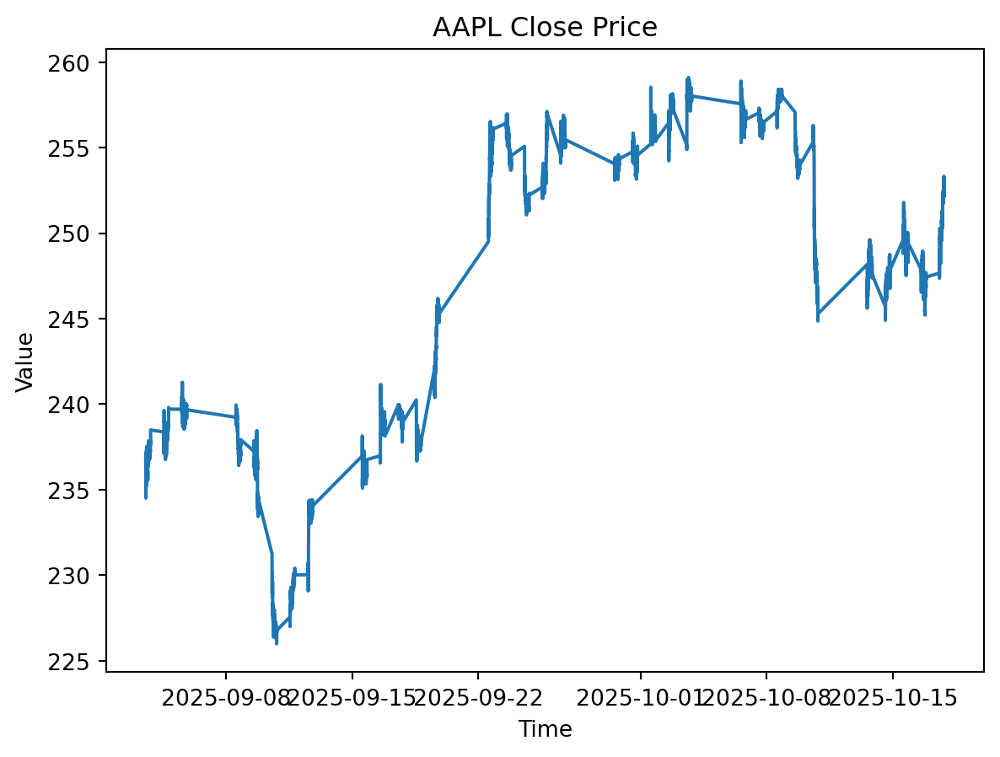
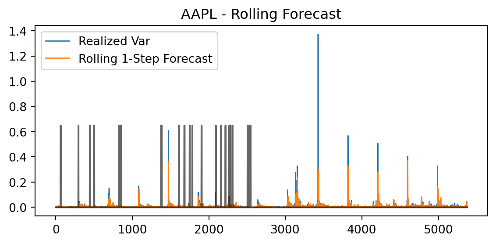
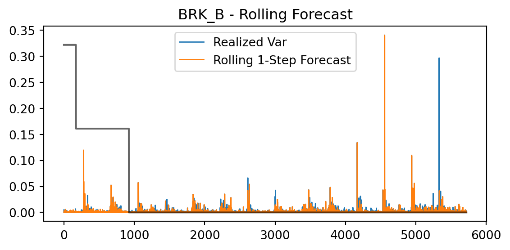
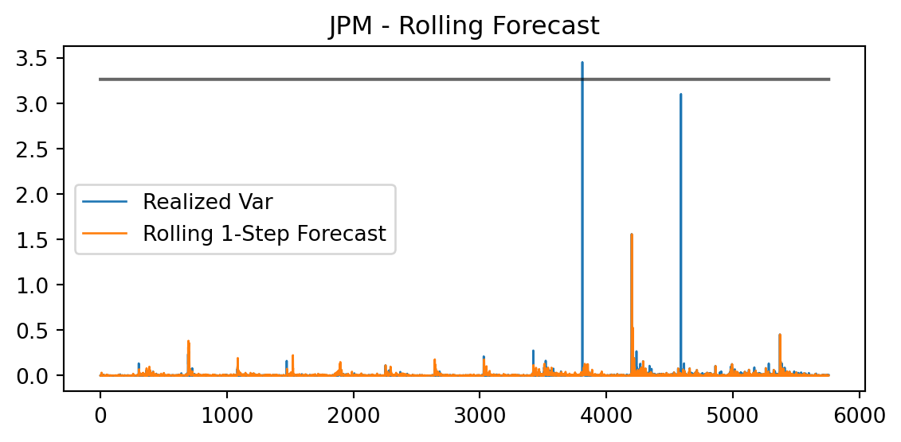
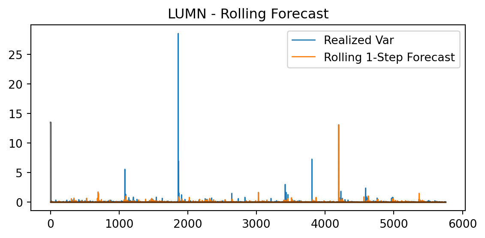
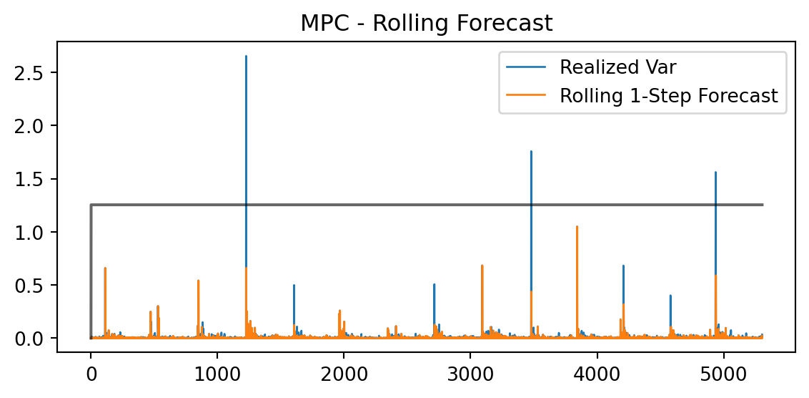
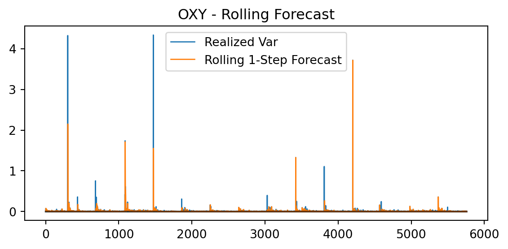

import numpy as np
from arch import arch_model
import pandas as pd
import yfinance as yf
from scipy.optimize import minimize
import pandas as pd
from math import sqrt, pi, exp
# New ticker names for calling global variables. dash changed to underscore.
tickers = ["AAPL","BP","BRK_B","BTC_USD","CIFR","CNTA","COP","CVX","DAVE", "IREN","JPM","LUMN","META","MPC","NVDA","OXY","PSX","RIOT", "SHEL","TSLA","VLO","XOM"]
# READING CONCATED DATA UNTIL G
for t in tickers:
globals()[f"d_{t}"] = pd.read_pickle(f"./G_concat_prices/G_{t}.pkl")MS-GARCH : Three Regime Markov Switching GJR and FI GARCH
Introduction
Model : Two State MS GJR GARCH with Poisson Jumps First, to clarify what the possion jump does for this model. We add a jump term to the conditional variance before computing densities of the Markov switch. We are de-meaning the returns by the expected jump and adding jump variance on top of the diffusive variance. Our h_t is the diffusion and not the entire variance itself. The model assumes mean :u_t = r_t - \lambda\mu J
With this diffusion + jump set up. It seems like we add the jump term to the return (shock) part for likelihood but we just separate it to eat up the noise. We then model the rest of the series with the MS model. This gives the model a bigger variance apetite for higher volatility securities.
Data
We use minutely data spanning 2025-09-03 to 2025-10-17 downloaded from yfinance.
for t in tickers:
globals()[f"d_{t}"]['Close'] = pd.to_numeric(globals()[f"d_{t}"]['Close'] , errors= "coerce")
for t in tickers:
globals()[f"y_{t}"] = globals()[f"d_{t}"]['Close']
for t in tickers:
arr = globals()[f"y_{t}"].to_numpy(dtype=float) # convert to numeric array
globals()[f"r_{t}"] = pd.Series(np.log(arr)).diff().dropna() *100

MS GJR-GARCH with (Poisson Jumps) - Model
Regime equations (mdl03)
h_{t+1}^{(0)} = \omega_0 + (\alpha_0 + \gamma_0\,\mathbf{1}\{u_t < 0\})(u_t^2 + \lambda\sigma_J^2) + \beta_0\,h_t^{(0)}
h_{t+1}^{(1)} = \omega_1 + (\alpha_1 + \gamma_1\,\mathbf{1}\{u_t < 0\})(u_t^2 + \lambda\sigma_J^2) + \beta_1\,h_t^{(1)}
where u_t = r_t - \lambda\mu_J represents the jump-adjusted innovation.
Variance in likelihood is the sum of diffusive variance h_t(j) plus jump variance.
Regime filter
\ell_j = f(r_t \mid s_t=j)
\pi_{t|t}(j)=\frac{\pi_{t|t-1}(j)\,\ell_j}{\sum_{k}\pi_{t|t-1}(k)\,\ell_k}
\pi_{t+1|t}(j)=\sum_i \pi_{t|t}(i)P_{ij}\quad\text{(i.e., }\pi_{t+1|t}=\pi_{t|t}P\text{)}
\ell_j = f(r_t \mid s_t=j)
Model Main
Setting up initial transition matrix and other important functions
R = 2 # number of regimes
P = np.array([[0.95, 0.05], # transition matrix
[0.10, 0.90]]) # rows sum to 1
pi_0 = np.full(R, 1.0/R) # start equal across regimes
# each regime j has [omega, alpha, beta]
params = {
0: [0.01, 0.05, 0.90],
1: [0.02, 0.10, 0.80]
}
def sigmoid(x):
x = np.clip(x, -500, 500) # avoid overflow
return 1 / (1 + np.exp(-x))
def row_softmax(M):
M = M - M.max(axis=1, keepdims=True)
E = np.exp(M)
# we substract the maximum in each value from all entries in that row
# so the largest becomes 0, then we exponentiate.
# that gives exp(0)=1 and others <1. to mimic softmax results but safely scaled.
return E / E.sum(axis=1, keepdims=True)
def softplus(z): # stable: log(1+e^z)
return np.log1p(np.exp(-np.abs(z))) + np.maximum(z, 0.0)Unpack Theta
This functions defined all the initial variables and starting values. it takes a raw input of theta0 and transforms them to abide GARCH assumptions.
def unpack_theta(theta, R=2):
k = 4*R
w_raw, a_raw, b_raw, g_raw = theta[:R], theta[R:2*R], theta[2*R:3*R], theta[3*R:4*R]
P_logits = theta[k:k+R*R].reshape(R, R)
lam_raw, muJ, sJ_raw = theta[k+R*R:k+R*R+3]
# omega = np.exp(w_raw)
omega = np.log1p(np.exp(w_raw))
# alpha = 1/(1+np.exp(-a_raw))
alpha = 1 / (1 + np.exp(-0.5 * a_raw))
# beta = sigmoid(b_raw)
beta = 1 / (1+ np.exp(-0.5* b_raw))
# gamma = sigmoid(g_raw)
gamma = 1 / (1+ np.exp(-0.5* g_raw))
# gamma = np.exp(-np.log1p(np.exp(-g_raw)))
# gamma[0] = 0 # This allows for the second regime to have no leverage effect
# single unified stationarity cap (incl. leverage)
s = alpha + beta + gamma
mask = s >= 0.999
if mask.any():
alpha[mask] *= 0.999 / s[mask]
beta[mask] *= 0.999 / s[mask]
gamma[mask] *= 0.999 / s[mask]
# Markov transitions
P = np.exp(P_logits - P_logits.max(axis=1, keepdims=True))
P = P / P.sum(axis=1, keepdims=True)
# Jumps with stable positivity and caps
lam = np.minimum(softplus(lam_raw), 5.0)
sigmaJ = np.minimum(softplus(sJ_raw), 1.0)
sigmaJ2 = sigmaJ*sigmaJ
return omega, alpha, beta, gamma, P, lam, muJ, sigmaJ2def _lgit(x): return np.log(x/(1-x))
theta0 = np.r_[ np.log(0.01)*np.ones(R),
_lgit(0.05)*np.ones(R),
_lgit(0.90)*np.ones(R),
np.zeros(R), # γ
np.zeros(R*R),
np.log(0.1), # lam_raw
0.0, # muJ
np.log(0.02) # sJ_raw
]NLL-MS-GARCH function
This function specifies the two regimes and jump parameters to output a log likelihood of the parameters extracted from unpack_theta.
def nll_ms_garch(theta, r, R=2, tol=1e-12):
r = np.asarray(r, float)
omega, alpha, beta, gamma, P, lam, muJ, sigmaJ2 = unpack_theta(theta, R)
pi = np.full(R, 1.0/R)
h = (omega + alpha*lam*sigmaJ2) / (1 - alpha - beta + 1e-9)
h = np.maximum(h, 1e-8)
ll = 0.0
for x in r:
u = x - lam*muJ
var = np.maximum(h + lam*sigmaJ2, 1e-12) # include jump variance
dens = (1.0/np.sqrt(2*np.pi*var)) * np.exp(-0.5*(u*u)/var)
mix = pi @ dens + tol
ll += np.log(mix)
post = (pi * dens) / mix
neg = float(u < 0.0)
h0 = omega[0] + alpha[0]*(u*u + lam*sigmaJ2) + beta[0]*h[0]
h1 = omega[1] + (alpha[1] + gamma[1]*neg)*(u*u + lam*sigmaJ2) + beta[1]*h[1]
h = np.array([h0, h1])
pi = post @ P
return -llForecast VAR Function
This function unpacks the tuned set of parameters (pre-optimized) from the nll_ms_garch and outputs a k period ahead forecast.
# Poisson-jump recursive variance update (structural form)
def forecast_var_k(r, theta, R=2, k=3):
omega, alpha, beta, gamma, P, lam, muJ, sigmaJ2 = unpack_theta(theta, R)
pi = np.full(R, 1.0/R)
h = (omega + alpha*lam*sigmaJ2) / (1 - alpha - beta + 1e-9)
regime = []
for x in r:
Jt = lam * muJ
u = x - Jt
neg = (u < 0).astype(float)
u2 = u*u
u2j= u2 + lam*sigmaJ2
h = omega + alpha*u2 + gamma*u2j*neg + beta*h
pi = pi @ P # Expected h_t+1
regime.append(pi.copy())
out = []
for _ in range(k):
out.append(float(pi @ h))
h = omega + alpha*out[-1] + beta*h
pi = pi @ P
return np.array(out) , regimeRolling Forecast Function
Rolling forecasts using k-7100 observations for convenience , inputting less data. We have rolling window of 7 observations ie. we observe past 7 minutes
tickers = ["AAPL","BRK_B","JPM","LUMN","MPC","OXY"]
import matplotlib.pyplot as plt
rolling_forecasts = {}
rolling_residuals = {}
for t in tickers:
r = np.asarray(globals()[f"r_{t}"], float)
f_roll = []
prev_theta = theta0.copy()
regime = []
for i in range(7100, len(r)):
r_sub = r[i-3:i] # forecast uses same r as in third last line r**2
res = minimize(nll_ms_garch, prev_theta, args=(r_sub, 2), method='L-BFGS-B')
theta_i = prev_theta if (not res.success or not np.isfinite(res.fun)) else res.x
prev_theta = theta_i
f_next, reg = forecast_var_k(r_sub, theta_i, R=2, k=1) # new output regime
regime.append(reg[-1])
f_roll.append(f_next[0])
globals()[f"regime_{t}"] = regime
if len(f_roll) > 0:
f_roll = np.array(f_roll)
y_true = r[-len(f_roll):]**2
globals()[f"y_true_{t}"] = y_true
globals()[f"y_pred_{t}"] = f_roll
rolling_residuals[t] = y_true - f_roll
plt.figure(figsize=(6,3))
plt.plot(r[-len(f_roll):]**2, label="Realized Var", linewidth=1)
plt.plot(f_roll, label="Rolling 1-Step Forecast", linewidth=1)
if len(regime) > 0 and np.array(regime).ndim ==2:
plt.plot(np.array(regime)[:,1] * 0.9 * plt.ylim()[1], color='black', alpha=0.6)
# Printing probability betweeen scaled 0 - 0.6
plt.title(f"{t} - Rolling Forecast"); plt.legend(); plt.tight_layout(); plt.show()
/var/folders/rz/hb914cgn7wb_sxdhbbm8krnh0000gn/T/ipykernel_28022/82496916.py:9: RuntimeWarning: overflow encountered in exp
alpha = 1 / (1 + np.exp(-0.5 * a_raw))
/var/folders/rz/hb914cgn7wb_sxdhbbm8krnh0000gn/T/ipykernel_28022/82496916.py:11: RuntimeWarning: overflow encountered in exp
beta = 1 / (1+ np.exp(-0.5* b_raw))


/var/folders/rz/hb914cgn7wb_sxdhbbm8krnh0000gn/T/ipykernel_28022/82496916.py:7: RuntimeWarning: overflow encountered in exp
omega = np.log1p(np.exp(w_raw))
